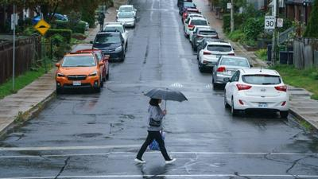

加拿大环境部（Environment Canada）向多伦多市发布特别天气声明，预计在未来24小时内将有强降雨﹐受影响的范围包括渥太华、满地可等地。
据环境部的数据显示，包括多伦多在内的安省西南部地区可能会在今（8）日到周五晚之间有25到50毫米的降雨量。
魁省和大西洋省份的部分地区可能会有高达100毫米的降雨量。
加拿大环境与气候变化部（Environment and Climate Change Canada）的气象学家史密斯（Jennifer Smith）表示，强降雨可能会在城市造成局部洪水。在大城市，如渥太华和满地可，甚至多伦多将明显受影响。
史密斯预计两个天气系统的会合，导致大气中的水分显著增加。
她说﹕「我们有一个系统在五大湖地区﹐同时，还有大量水分来自热带风暴Debby的残留影响。这两个系统基本上互相滋养，提供大量水分。这将使大气有可能发展成雷暴和强降雨。」
由于城市环境在短时间内无法有效排水，可能会出现局部洪水。
她说﹐今年夏天，加拿大东部已经历大量降两，因此所有能够吸收更多水分的地方都已饱和。因此，陆地上的洪水很可能会发生。
就在三周前，多伦多市经历了大规模的洪水和停电，原因是3小时内降雨量接近100毫米。
由于高峰期的贾丁纳公路（Gardiner Expressway）和当谷大道（Don Valley Parkway）被水淹没，一些车辆被困，部分路段被关闭。洪水淹没了地下室、地铁站和联合车站的零售大厅。
史密斯提醒市民要注意可能发生的闪电及洪水。这会导致道路上积水，外出时有危险，市民应按天气调整出外的计划。